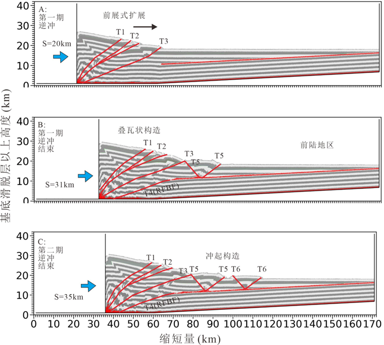
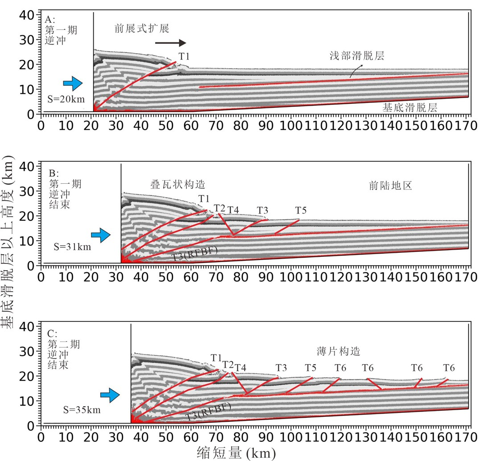
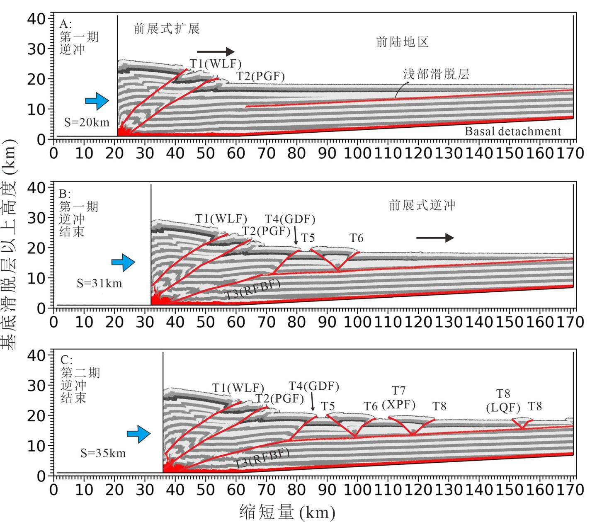
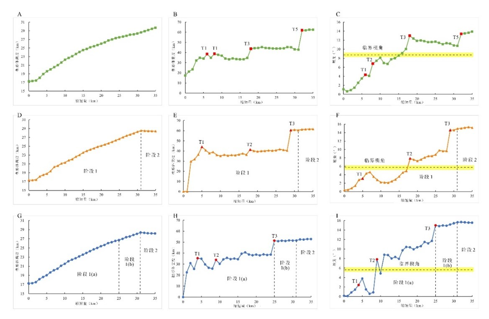

摘要：川西南褶皱冲断带（The southwestern Sichuan fold-thrust belt，简写SWSB）是一个具有两套滑脱层的双重滑脱体系，其滑脱层分别为深度约15-17 km的基底前寒武纪滑脱层和上部中三叠世滑脱层。在新生代川西南褶皱冲断带经历了前展式扩展运动。目前控制上述褶皱冲断作用的动力学机制以及两套滑脱层对川西南褶皱冲断带构造变形的控制机制仍然有待于深入研究。本论文设计了三个可对比的离散元数值模型。在这些模型中，浅部滑脱层均具有相同的参数，但对基底滑脱层设计了不同的机械强度和厚度，从而探讨不同的基底滑脱层强度对川西南褶皱冲断带形成演化的影响。模型I的特点是强摩擦基底滑脱层，表现为在两期变形中均表现为向前陆地区前展式逆冲。大部分变形和逆冲断层集中在活动的后壁附近，并伴随着叠瓦状构造和两个冲起构造的发展。对于模型左侧楔形体的几何参数，模型I表现出“楔高线性增加”、“楔宽和坡角阶梯式增加”的特点。模型II的基底滑脱层厚度为500 m且摩擦力适中。在该模型中，应力应变迅速传播到前陆地区，并且第二期挤压在上部滑脱层上形成了多个逆冲和反冲断层。第一期挤压中模型II的变形过程与模型I相似。然而在第二期挤压中，楔形体达到稳定状态，其几何形状保持不变，变形沿浅层滑脱层传播至模型的右侧。模型III的基底滑脱层厚度较大且摩擦力适中，其前陆地区逆冲断层的几何形状和活动性与其他模型明显不同。在这个模型的第二期挤压中，产生了两个额外的冲起构造。第一期挤压的前半段与前两个模型相似。在第一期挤压的后半段和第二期挤压中，楔形体处于稳定状态。值得注意的是，在缩短的第一阶段中所有模型都经历了从亚临界状态到超临界状态的转变，这表明变形正在沿基底滑脱层迅速向模型右侧推进。总体而言模型III更准确地反映了川西南褶皱冲断带的变形特征，表明其与该地区演化具有较强的相关性。这些模型有助于理解川西南褶皱冲断带的变形过程和形成机制，同时可为浅部滑脱层下油气勘探研究提供参考。 (Wang et al.,2024)。
Wang Y, Wang L, Ren R, Wei G, Chen Z,Su N and Zhang Y (2023), The influence of basal detachment strength on formation of the southwestern Sichuan fold-thrust belt: insights from discrete-element numerical simulations. Front. Earth Sci. 11:1251417.题目
The influence of basal detachment strength on formation of the southwestern Sichuan fold-thrust belt: insights from discrete-element numerical simulations
Yanqi Wang, Lining Wang*, Rong Ren, Guoqi Wei, Zhuxin Chen, Nan Su and Yuqing Zhang
a. Research Institute of Petroleum Exploration and Development, Beijing, China
Introduction:
The southwestern Sichuan fold-thrust belt (SWSB) is a duplex detachment system and features the basal Precambrian detachment at a depth of approximately 15–17 km and the upper Mid-Triassic detachment. Moreover, the SWSB undergoes forward-breaking propagation during the Cenozoic. To date, the mechanism and kinematic evolution governing the SWSB in this thrusting deformation as well as the way the two detachments control the structural deformation pattern of the SWSB remains unknown.
Methods:
In this work, three discrete-element numerical models with the same strong upper detachment but basal detachments with different mechanical strengths and thicknesses were designed to study the deformation of the SWSB.
Results:
The results indicate that for the Model I with a strong frictional basal detachment with thickness of 500 m, most deformation and thrust faults concentrate near the mobile backwall. Model I exhibits characteristics such as linearly increasing wedge height and stepwise increasing wedge width and slope angle. For the Model II with a modest frictional basal detachment with thickness of 500 m, the strain and deformation propagate into the foreland quickly and multiple back-thrust and thrust faults form on the upper detachment in the second thrusting period. The first thrusting period in Model II, exhibits similarities with Model I. However, in the second period, the wedge reaches a stable state, and its geometry remains constant. In this stage, the deformation propagates along the shallow detachment into the right side of the model. The geometry and activity of thrust faults in the foreland differ significantly in the model III with a modest frictional basal detachment but a greater thickness. Two additional pop-up structures are generated in the second period in this model. The first half of the first thrusting period is similar to the first two models. In the second half of the first period and the second period, the wedge is in a stable state. In the first stage of the shortening, all models undergo a transition from a subcritical state to entering a supercritical state, which indicates that the deformation is progressing rapidly along the basal detachment towards the right side of the model.
Discussion:
The results of Model III are consistent with the deformation pattern of the SWSB. The study of the kinematics and interaction between two detachments could help hydrocarbon exploration beneath the upper detachment.

模型I（基底滑脱层厚度为500 m，摩擦系数为0.3）的变形过程 （A）-（C）图分别为模型I在缩短量（S）为20 km、31 km和35 km时的结果。T1-T6表示按形成顺序编号的逆冲断层

模型II（基底滑脱层厚度为500 m，摩擦系数为0.2）变形过程 （A）-（C）图分别为模型II在缩短量（S）为20 km、31 km和35 km时的结果。T1-T6表示按形成顺序编号的逆冲断层

模型III（基底滑脱层厚度为1,000 m，摩擦系数为0.2）的变形过程（A）-（C）图分别为模型III在缩短量（S）为20 km、31 km和35 km时的结果。T1-T8表示按形成顺序编号的逆冲断层
